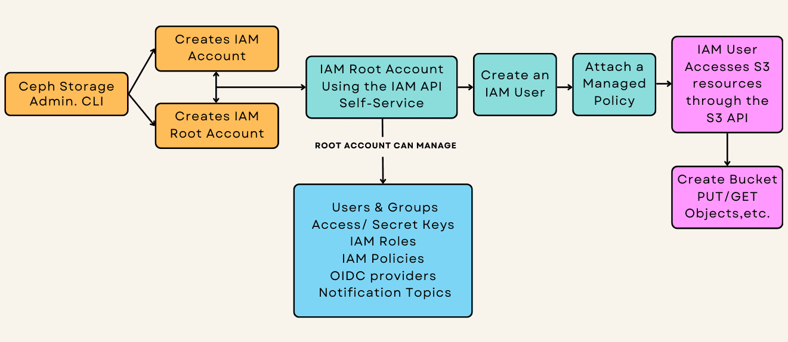

Enhancing Ceph Multitenancy with IAM Accounts

Introduction ¶
Efficient multitenant environment management is critical in large-scale object storage systems. In the Ceph Squid release, we’ve introduced a transformative feature: Identity and Access Management (IAM) accounts.
This enhancement brings self-service resource management to Ceph Object Storage and significantly reduces administrative overhead for Ceph administrators by enabling hands-off multitenancy management.
IAM accounts allow tenants to independently manage their resources—users, groups, roles, policies, and buckets—using an API interface modeled after AWS IAM. For Ceph administrators, this means delegating day-to-day operational responsibilities to tenants while retaining system-wide control.
The IAM API is fully compatible with AWS S3 and is offered through the Object Gateway API endpoint. In this way, IAM Account administrators (root account) don’t need access or permissions on the Ceph internal radosgw-cli or adminOPS API, enhancing responsibility delegation while maintaining security.
With the addition of IAM accounts, we have a new user persona that represents the tenant admin: the IAM Root Account User.
- Ceph Object Storage Administrator: Responsible for system-wide management and creating the IAM accounts.
- IAM Root Account User: The admin responsible for the Account. Manages Resources within a specific tenant/IAM account, consuming the IAM API available through the RGW endpoint.
- S3 End Users: Operate within the confines of permissions granted by the root account user.

Walkthrough: Working with IAM Accounts in Ceph ¶
Pre-requisites: Ceph Squid or later with RGW/Object Storage Service running. ¶
Although outside this post's scope, we provide an example RGW Spec file that sets up the RGW services and the Ingres Service (load balancer) for the RGW endpoints.
# cat << EOF > /root/rgw-ha.spec
---
service_type: ingress
service_id: rgw.rgwsrv
service_name: ingress.rgw.rgwsrv
placement:
count: 2
hosts:
- ceph-node-02.cephlab.com
- ceph-node-03.cephlab.com
spec:
backend_service: rgw.rgwsrv
first_virtual_router_id: 50
frontend_port: 80
monitor_port: 1497
virtual_ip: 192.168.122.100
---
service_type: rgw
service_id: rgwsrv
service_name: rgw.rgwsrv
placement:
count: 3
hosts:
- ceph-node-03.cephlab.com
- ceph-node-00.cephlab.com
- ceph-node-01.cephlab.com
spec:
rgw_frontend_port: 8080
rgw_realm: realm1
rgw_zone: zone1
rgw_zonegroup: zonegroup1
EOF
# ceph orch apply -i /root/rgw-ha.spec
This config provides us with a working virtual IP endpoint on 192.168.122.100 that resolves to s3.zone1.cephlab.com.
How to Create & Set Up an IAM Account as the Object Storage Admin ¶
Let’s walk through the steps to configure an IAM account, create users, and apply permissions.
Create an IAM Account ¶
We will use the radosgw-admin CLI to create an IAM account for an analytics web application team; you could also use the AdminOPS API.
In the example, we first create the IAM account and then define the resources this specific IAM account will have available from the global RGW/Object Storage system.
# radosgw-admin account create --account-name=analytic_app
This command creates an account named analytic_app. The account is initialized with default quotas and limits, which may be adjusted afterward. When using IAM accounts, an RGW Account ID gets created that will be part of the principal ARN when we need to reference it, for example: arn:aws:iam::RGW00889737169837717:user/name.
Example output:
{
"id": "RGW00889737169837717",
"tenant": "analytics",
"name": "analytic_app",
"max_users": 1000,
...
}
Modify IAM Account Limits ¶
As the RGW admin, in this example, we adjust the maximum number of users for the account:
# radosgw-admin account modify --max-users 10 --account-name=analytic_app
This ensures the IAM account can create up to ten users. Depending on your needs, you can also manage the maximum numbers of groups, keys, policies, buckets, etc.
Set Quotas on an IAM Account ¶
As part of creating the IAM account, we can enable and define quotas for the account to control resource usage. In this example we configure the account's maximum storage usage to 20GB, and we can also configure other quotas related to the object count per bucket:
# radosgw-admin quota set --quota-scope=account --account-name=analytic_app --max-size=20G
# radosgw-admin quota enable --quota-scope=account --account-id=RGW00889737169837717
¶
Creating the Account Root User for our new IAM Account
Each IAM account is managed by a root user, who has default permissions over all resources within the account. Like normal users and roles, accounts and account root users must be created by an administrator using radosgw-admin or the Admin Ops API.
To create the account root user for the analytic_app account, we run the following command:
# radosgw-admin user create --uid=root_analytics_web --display-name=root_analytics_web --account-id=RGW00889737169837717 --account-root --gen-secret --gen-access-key
Example output:
{
"user_id": "root_analytics_web",
"access_key": "1EHAKZAXKPV6LU65QS2R",
"secret_key": "AgXK1BqPOP25pt0HvERDts2yZtFNfF4Mm8mCnoJX",
...
}
The root account user is now ready to create and manage users, groups, roles, and permissions within the IAM account. These resources can be administered and managed through the IAM API available through the RGW endpoint. At this point, the RGW admin may provide the credentials of the root user of the IAM account to the person responsible for the account. That person can perform all administrative operations related to their account using the IAM API provided by the RGW endpoint, which is entirely hands-off for the RGW administrator/operator.
Here is a list of some operations that the IAM root account can perform without the intervention of an RGW admin:
- Create, Modify, and Delete Users
- Manage Account Users Access and Secret Keys
- Manage IAM Policies
- Manage IAM User Policies
- Manage IAM Groups
- Create, Modify, and Delete OIDC providers
- Create, Modify, and Delete Notification Topics
Creating Users, Groups, and Roles as the IAM Root Account through the IAM API ¶
Create a new IAM User in the IAM Account. ¶
Now we will configure the AWS CLI using the Access and Secret Keys of the IAM Root Account generated in the previous step. The IAM API is available by default on my Ceph Object Gateway (RGW) endpoints. In this example, we have s3.zone1.cephlab.com as the load-balanced endpoint providing access to the API.
# dnf install awscli -y
# aws configure
AWS Access Key ID [****************dmin]: 1EHAKZAXKPV6LU65QS2R
AWS Secret Access Key [****************dmin]: AgXK1BqPOP25pt0HvERDts2yZtFNfF4Mm8mCnoJX
Default region name [multizg]: zonegroup1
Default output format [json]: json
# aws configure set endpoint_url http://s3.zone1.cephlab.com
Add a new IAM user named analytics_frontend to the analytics IAM account:
# aws iam create-user --user-name analytics_frontend
Assign an access key and secret key to the new user:
# aws iam create-access-key --user-name analytics_frontend
At this point, the user cannot access the S3 resources. In the next step, we will enable the user to access resources. Here is an example of trying to access the S3 namespace as the analytics_frontend user without attaching a policy:
# aws --profile analytics_backend s3 ls
argument of type 'NoneType' is not iterable
# aws --profile analytics_backend s3 ls s3://staticfront/
argument of type 'NoneType' is not iterable
Options to provide IAM users access to S3 resources ¶
We have multiple ways to grant the new IAM user access to the various resources available in the account, for example, IAM, S3, and SNS resources:
- Attach Pre-defined Managed policies; managed IAM policies can be attached to multiple IAM identities (users, groups, roles) and reused across AWS accounts.
- Create a custom in-line User or Group Policy (Making the user part of the Group with a policy attached)
- Assume an existing IAM Role to acquire the permissions granted to the role
| Feature | Managed Policies | Inline Policies | Assume Role |
|---|---|---|---|
| Definition | Reusable policies that can be attached to multiple users, groups, or roles. | Policies created for and attached to a single user, group, or role. | Temporary access is granted to a user or service to perform specific tasks. |
| Reusability | Can be shared across multiple accounts or identities within the RGW IAM system. | Specific to the identity they are attached to and cannot be reused. | Roles can be reused by multiple identities that need temporary access. |
| Ease of Management | Easier to manage due to centralized policy definition. | Requires individual updates for each identity they are attached to. | It is easier to manage since roles are centrally defined and assumed as needed. |
| Flexibility | Ideal for common permissions that apply to many users or groups. | Best for unique permissions tailored to specific use cases or users. | Highly flexible for scenarios requiring time-limited, task-specific access. |
| Use Case | Example: Granting read-only or full access to S3 buckets across multiple users. | Example: Granting a specific user access to a unique S3 bucket. | Example: Allowing a service to temporarily assume access to an S3 bucket for processing. |
Example 1. Attach a Managed Policy to a new IAM user ¶
In this first example, we use a managed policy, policy/AmazonS3FullAccess, to allow the analytics_frontend user full access to IAM Account S3 resources:
# aws iam attach-user-policy --user-name analytics_frontend --policy-arn arn:aws:iam::aws:policy/AmazonS3FullAccess
Once we have attached the managed policy, we can create the S3 resources of the IAM account, for example:
# aws --profile analytics_frontend s3 mb s3://staticfront
make_bucket: staticfront
Example 2. Attach a Managed Policy to a Group and Add IAM users to the Group ¶
First create an IAM group to manage permissions for users requiring similar roles. Iin this case, we are creating a group for the frontend-monitoring team.
# aws iam create-group --group-name frontend-monitoring
Attach a Policy to the Group: In this example, we will attach an S3 read-only access policy to the group so that all users inherit the permissions and can access the S3 resources in read-only mode. No modifications to the S3 dataset are allowed.
# aws iam attach-group-policy --group-name frontend-monitoring --policy-arn arn:aws:iam::aws:policy/AmazonS3ReadOnlyAccess
Check that the policy is successfully attached to the group:
# aws iam list-attached-group-policies --group-name frontend-monitoring
{
"AttachedPolicies": [
{
"PolicyName": "AmazonS3ReadOnlyAccess",
"PolicyArn": "arn:aws:iam::aws:policy/AmazonS3ReadOnlyAccess"
}
]
}
Create individual IAM users with their keys who will be group members.
# aws iam create-user --user-name mon_user1
# aws iam create-user --user-name mon_user2
# aws iam create-access-key --user-name mon_user1
# aws iam create-access-key --user-name mon_user2
Add the users created in the previous step to the frontend-monitoring group so they inherit the permissions.
# aws iam add-user-to-group --group-name frontend-monitoring --user-name mon_user1
# aws iam add-user-to-group --group-name frontend-monitoring --user-name mon_user2
Confirm that both users are part of the group:
# aws iam get-group --group-name frontend-monitoring
{
"Users": [
{
"Path": "/",
"UserName": "mon_user1",
"UserId": "fe09d373-08e8-4b61-bffa-6f65eaf11e56",
"Arn": "arn:aws:iam::RGW60952341557974488:user/mon_user1"
},
{
"Path": "/",
"UserName": "mon_user2",
"UserId": "29c57263-1293-4bdf-90e4-a784859f12ef",
"Arn": "arn:aws:iam::RGW60952341557974488:user/mon_user2"
}
],
"Group": {
"Path": "/",
"GroupName": "frontend-monitoring",
"GroupId": "a453d5af-4e25-401c-be76-b4075419cc94",
"Arn": "arn:aws:iam::RGW60952341557974488:group/frontend-monitoring"
}
}
Example 3. Create a custom inline policy and attach it to a specific user ¶
This example demonstrates creating and attaching an inline policy to a specific user in IAM. Inline policies define permissions for a single user and are directly embedded into their identity. While this example focuses on the PutUserPolicy operation, the same approach applies to groups (PutGroupPolicy) and roles (PutRolePolicy) if you need to manage permissions for those entities.
We begin by creating a user who will be assigned the custom inline policy.
# aws iam create-user --user-name static_ro
# aws iam create-access-key --user-name static_ro
We create a JSON file containing the policy document to define the Custom Inline Policy. This policy permits users to perform read-only operations on a specific S3 bucket and its objects.
# cat << EOF > analytics_policy_web_ro.json
{
"Version": "2012-10-17",
"Statement": [
{
"Effect": "Allow",
"Action": [
"s3:GetObject",
"s3:ListBucket",
"s3:ListBucketMultipartUploads"
],
"Resource": [
"arn:aws:s3:::staticfront/*",
"arn:aws:s3:::staticfront"
]
}
]
}
EOF
Example Policy Overview:
- Effect: Allow specifies that the policy grants permissions.
- Actions: Includes s3:GetObject, s3:ListBucket, and s3:ListBucketMultipartUploads, which allow the user to read data and list objects in the S3 bucket.
- Resource: Specifies the S3 bucket (analytics:staticfront) and its objects.
Attach the policy to the user using the put-user-policy command.
# aws iam put-user-policy --user-name static_ro --policy-name analytics-static-ro --policy-document file://analytics_policy_web_ro.json
List the inline policies attached to the user to confirm the policy was successfully applied.
# aws iam list-user-policies --user-name static_ro
{
"PolicyNames": [
"analytics-static-ro"
]
}
Conclusion ¶
Since this topic is too extensive for a single post, we won't cover IAM roles and the ability of IAM users to assume roles with the help of STS in this article. In our next post about the new IAM account feature in Squid, we will explore additional exciting features, including Roles with STS and cross-account access for sharing datasets between accounts.
For further details on IAM, explore the IAM API documentation, and Account documentation.
For further details on the Squid release, check Laura Flores' blog post
Footnote ¶
The authors would like to thank IBM for supporting the community with our time to create these posts.